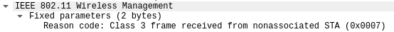
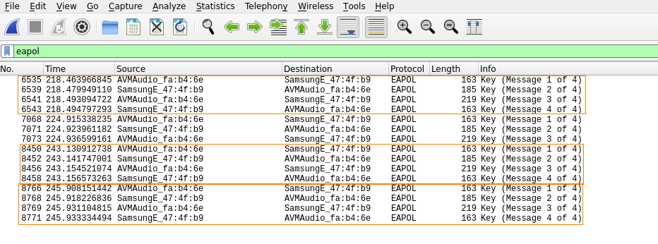

wireshark
To filter in Wireshark for
deauthentication frames, you need to use:
(wlan.fc.type == 0) && (wlan.fc.type_subtype == 0x0c)
The Deauth code used by default by aireplay-ng to deauthenticate a device from the network is 7. Code 7 meaning that a radio is informing the other radio to deauth because they isn't an associaation(
source)
WPA handshake captured with Wiresharkdisplay filter:
EAPoL (protocol) is the abbreviation of
Extensible Authentication Protocol over LAN. EAPoL (Extensible Authentication Protocol over LAN) is a network authentication protocol used in 802.1x (Port Based Natwork Access Control).
